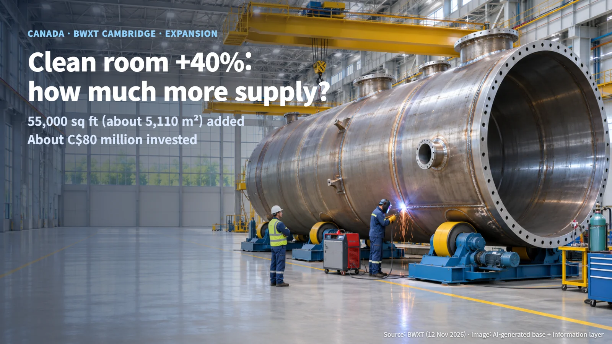
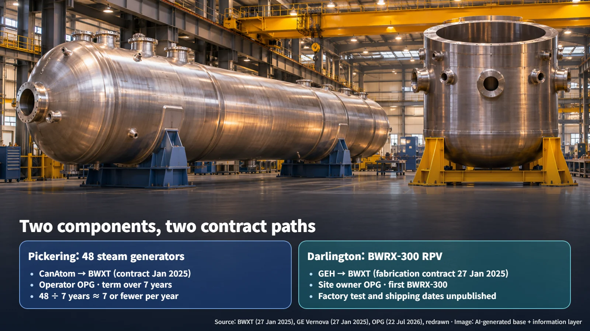
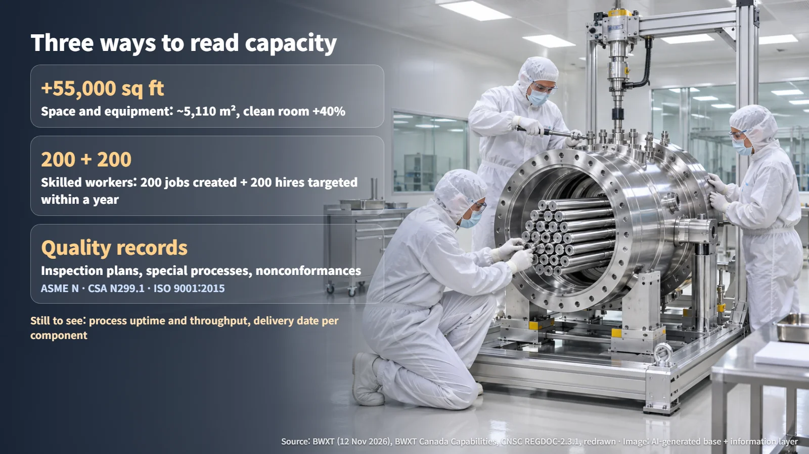

Canada · BWXT · Supply Chain
A 40% Bigger Clean Room: What BWXT's Cambridge Expansion Means for Nuclear Component Supply
BWXT added 55,000 square feet and a 40% larger clean room in Cambridge, Ontario. Output depends on equipment, skilled workers and quality records as well as floor space.
As more countries talk about building new reactors and extending the lives of existing ones, a practical question keeps coming up: who actually makes the heavy components, and where? A reactor pressure vessel or a large steam generator comes out of a small number of specialized shops. So when one of those shops announces that it has grown, the natural follow-up is whether supply grows by the same amount.
On November 12, 2026, BWXT announced that it had completed the expansion of its nuclear component manufacturing facility in Cambridge, Ontario, Canada. This post looks at what was added, what the plant is building right now, and which records will show whether its supply capacity has really increased.

55,000 Square Feet and a 40% Larger Clean Room: What Grew
BWXT said the project, which began in 2024 with an investment of about CAD 80 million, added 55,000 square feet (about 5,110 m²) of manufacturing space along with advanced manufacturing equipment. The metric figure is a simple conversion: one square foot is about 0.0929 m², so 55,000 × 0.0929 ≈ 5,110 m². That is roughly the footprint of a large new factory hall attached to the existing site.
The second headline number is a 40% increase in clean-room area for commercial nuclear components. A clean room is an assembly space with strict control of dust and contamination, used for sensitive components. BWXT's Canadian capabilities brochure lists the Cambridge plant's manufacturing services as large welded fabrications, heat treatment and machining, so the clean room sits alongside a chain of heavy-steel processes.
The workforce also grew. BWXT said the expansion created 200 long-term jobs in engineering, welding, metalworking, robotics, precision machining and digital manufacturing, and that it aims to hire another 200 people in Cambridge over the next year. Adding them up: 200 jobs already created + 200 planned hires = about 400 people, if the hiring target is met. The first 200 are in place; the second 200 are a one-year goal.
The kind of numbers in the announcement matters. A 40% larger clean room describes space. Output depends on how many hours each machine runs, how many qualified people are assigned to each step and how quickly inspections close. BWXT did not publish an annual output growth rate or a reduction in delivery times. What the announcement establishes today is a larger base for building more components; how much output rises will show up in future operating and delivery records.
Two Components in Production: 48 Pickering Steam Generators and a Darlington Pressure Vessel
BWXT named two projects currently under way at Cambridge. Both relate to reactors operated by Ontario Power Generation (OPG), yet their nature and contract paths differ.
The first is 48 steam generators for the Pickering life-extension and refurbishment project. A steam generator is a large heat exchanger that takes heat from the reactor coolant and turns feedwater into steam for the turbine. This is an existing contract announced in January 2025. BWXT's direct customer is CanAtom, a joint venture of AtkinsRéalis and Aecon, and the project runs for more than seven years. A simple calculation gives 48 units ÷ 7 years ≈ about 7 units per year; because the project runs longer than seven years, the average pace is 7 units a year or fewer. It is a long, steady production run.
Progress is visible. On July 22, 2026, OPG said BWXT was assembling the heavy steel vessels that will form the new steam generators. In the same release, OPG said it was preparing training on a mock-up of the reactor building dome for replacing the 48 existing steam generators. Factory production and on-site replacement are being prepared in parallel, so the clearest way to read the schedule is to pair each factory shipment with the date the station can accept it.
The second is the reactor pressure vessel (RPV) for the first BWRX-300 at the Darlington site. An RPV is the large vessel that holds the reactor core, the coolant and internal support structures. GE Hitachi Nuclear Energy (GEH) announced on January 27, 2025, that it had awarded the RPV manufacturing contract to BWXT. Before that, BWXT's work covered engineering analysis, design support and preparation for manufacturing and procurement; the January 2025 contract moved it into fabrication. The November 2026 expansion release lists the RPV as work in progress. Individual factory inspection and shipping dates have not been published. An earlier post on the Darlington BWRX-300 schedule and cost targets covers the wider project.

Side by side, the two jobs look like this:
| Item | Pickering steam generators | Darlington reactor pressure vessel | |---|---|---| | Purpose | Life extension and refurbishment of an operating station | New SMR (BWRX-300) construction | | Quantity | 48 units | 1 unit for the first BWRX-300 | | BWXT's direct customer | CanAtom | GEH | | Station operator / site owner | OPG | OPG | | Schedule records to watch | Unit-by-unit fabrication, inspection and site delivery plan | Fabrication, acceptance and shipping schedule |
(Source: compiled from BWXT contract release of 2025-01-27, GE Vernova release of 2025-01-27 and OPG release of 2026-07-22)
One job is a long series of repeated units; the other is the first vessel for a new reactor design. Each calls for a different set of schedule records.
Three Ways to Check Supply Capacity: Space, Skilled Workers and Quality Records
How, then, can anyone confirm that supply capacity has grown? The published numbers and the records still needed fit into three areas.

1. Space and equipment. The starting point is 55,000 square feet of new space and a 40% larger clean room. To turn that into throughput, one needs to know which machines are operating in each process and how many hours they are available. For heavy components, the slowest step among welding, heat treatment and machining sets the overall pace.
2. Skilled workers. The starting point is 200 jobs created and a target of 200 more hires. Nuclear-grade welding is done by qualified welders following approved procedures, so the hiring count needs to be matched by staffing per role, training and assignment to specific processes. Whether the roughly 400-person level is reached within a year is the next checkpoint.
3. Quality records. BWXT's capabilities brochure states that Cambridge holds ASME N certification, runs a quality program that meets CSA N299.1, the Canadian nuclear quality standard, and is certified to ISO 9001:2015. Current validity dates, scope, and whether the new equipment falls within that scope are confirmed through the latest certificates and customer approvals.
The Canadian Nuclear Safety Commission's guidance REGDOC-2.3.1 makes the third area concrete. When selecting suppliers, licensees review capability, management systems and understanding of requirements; during manufacturing, they check procurement specifications, manufacturing and inspection plans, special processes and nonconformance handling. Special processes are steps such as welding and heat treatment whose quality cannot be judged by looking at the finished surface. Nonconformance handling is how deviations are found, fixed and formally closed out. The quality of a nuclear component is proven by the finished part together with this chain of records.
Taken together, the three areas show where the expansion stands. The space is in place. Half of the roughly 400-person workforce is in place and the other half is a one-year hiring goal. Quality records build up unit by unit as fabrication proceeds. The final confirmation of higher supply capacity comes when the Pickering steam generators and the Darlington pressure vessel pass inspection and are delivered to site.
Floor space is the starting line. Following when the steam generators arrive at Pickering and when the pressure vessel clears factory inspection will show, in numbers, how much stronger the nuclear component supply chain is becoming.